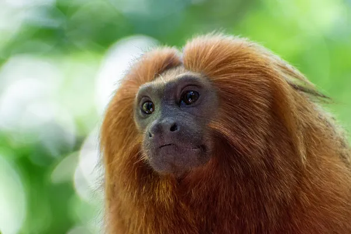

Cabeçalho
Menu
Google
Página

O mico-leão-dourado é um primata endêmico do Brasil, da família Callitrichidae e gênero Leontopithecus. Ocorre exclusivamente na Mata Atlântica brasileira, no estado do Rio de Janeiro, mas alguns autores já consideraram sua ocorrência no sul do Espírito Santo.
Lado
HABITATE
QUANTIDADE DE INDIVIDUOS
PODE SER CRIADO EM RESIDENCIA?
MATA ATLANDIDA, CERRADO, CATINGA
- de 1.000
NÃO
Rodapé